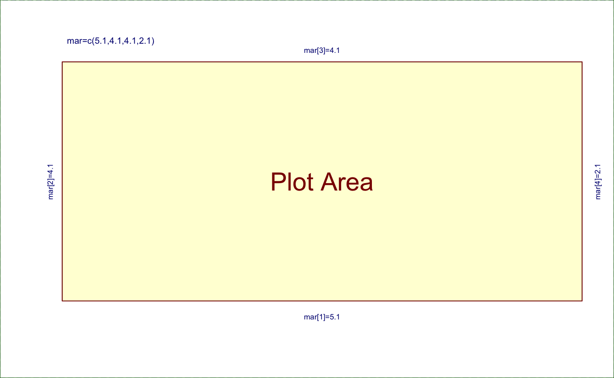

Create a blank plot with optional labels for margins
nullPlot(xaxt = "n", yaxt = "n", xlab = "", ylab = "", col = "transparent", xlim = c(1, 2), ylim = c(1, 2), las = par("las"), doBoxes = TRUE, doUsrBox = doBoxes, fill = "#FFFF9966", doAxes = FALSE, doMargins = TRUE, plotAreaTitle = "Plot Area", plotSrt = 0, plotNumPrefix = "", bty = "n", showMarginsOnly = FALSE, ...)
| xaxt | character value compatible with |
|---|---|
| yaxt | character value compatible with |
| xlab | character x-axis label |
| ylab | character y-axis label |
| col | character colors passed to |
| xlim | numeric x-axis range |
| ylim | numeric y-axis range |
| las | integer value indicating whether axis labels should be parallel (1) or perpendicular (2) to the axis line. |
| doBoxes | logical whether to draw annotated boxes around the plot and inner and outer margins. |
| doUsrBox | logical whether to draw a colored bow indicating the
exact plot space, using the function |
| fill | character R color used to fill the background of the plot
as used by |
| doAxes | logical whether to draw default x- and y-axes. |
| doMargins | logical whether to label margins, only active when doBoxes=TRUE. |
| plotAreaTitle | character label printed in the center of the plot area. |
| plotSrt | numeric angle for the plotAreaTitle, which is good for labeling this plot with vertical text when displaying a plot panel inside a grid layout, where the plot is taller than it is wide. |
| plotNumPrefix | character or integer label appended as suffix to margin labels, which is useful when annotating multiple plots in a grid layout, where labels are sometimes quite close together. This label is but a simple attempt to sidestep the real problem of fitting labels inside each visual component. |
| bty | character passed to the basic |
| showMarginsOnly | logical whether to create a new plot or to annotate an existing active plot. |
This function creates an empty plot space, using the current
par settings for margins, text size, etc. By default
it displays a box around the plot window, and labels the margins and
plot area for review. It can be useful as a visual display of various
base graphics settings, or to create an empty plot window with pre-defined
axis ranges. Lastly, one can use this function to create a "blank" plot
which uses a defined background color, which can be a useful precursor to
drawing an image density which may not cover the whole plot space.
The doBoxes=TRUE functionality was adapted from Earl F. Glynn's margin tutorial: http://research.stowers.org/mcm/efg/R/Graphics/Basics/mar-oma/index.htm with much respect for his effective visual.
nullPlot()